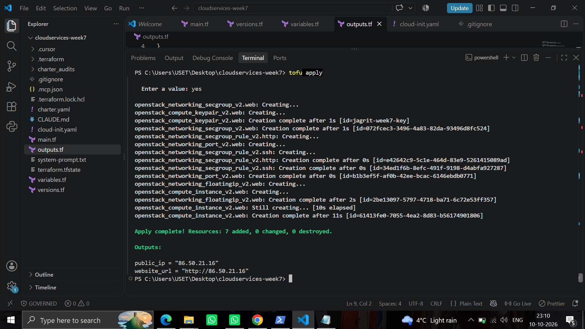
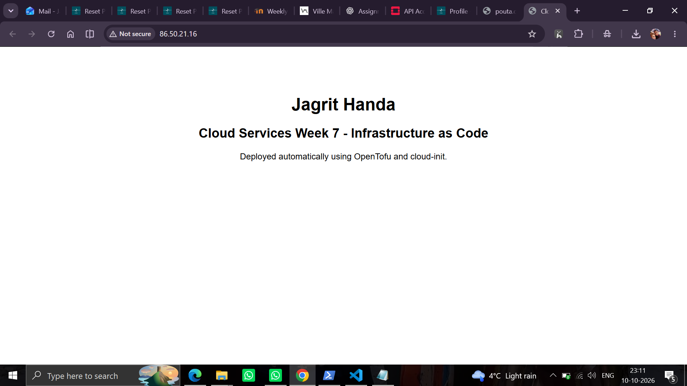
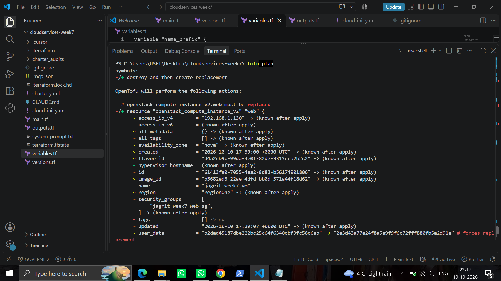
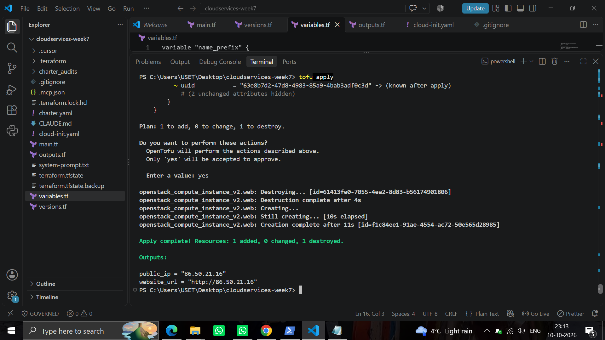
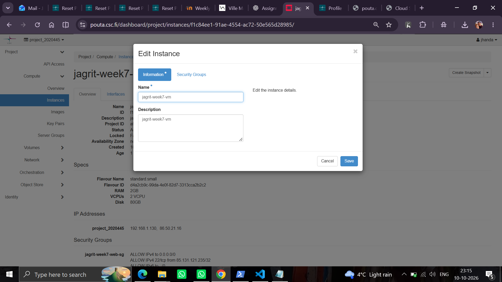
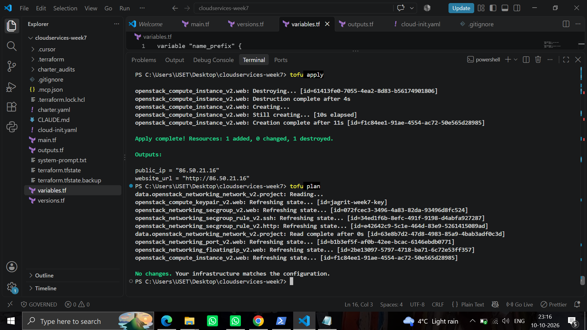
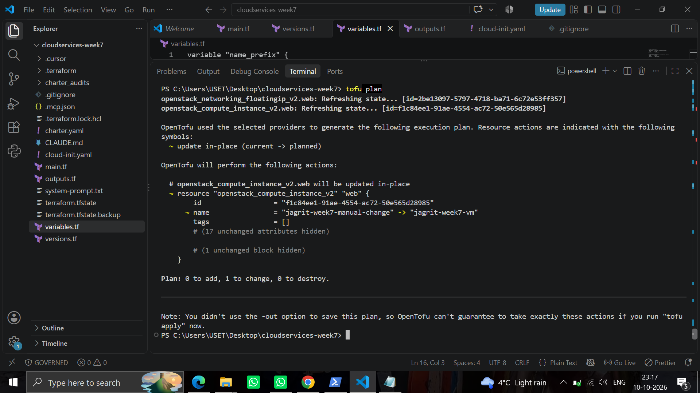
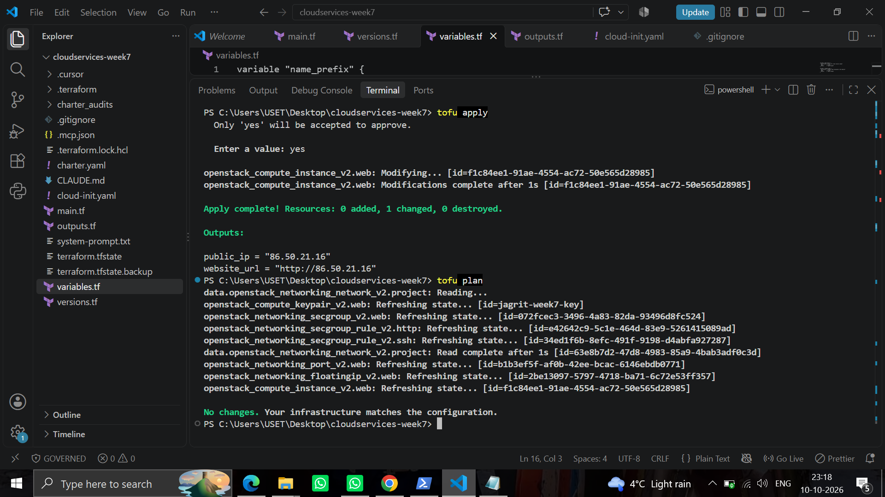
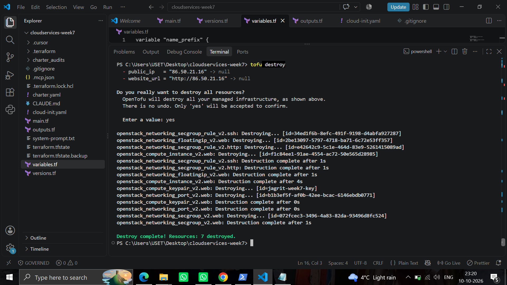
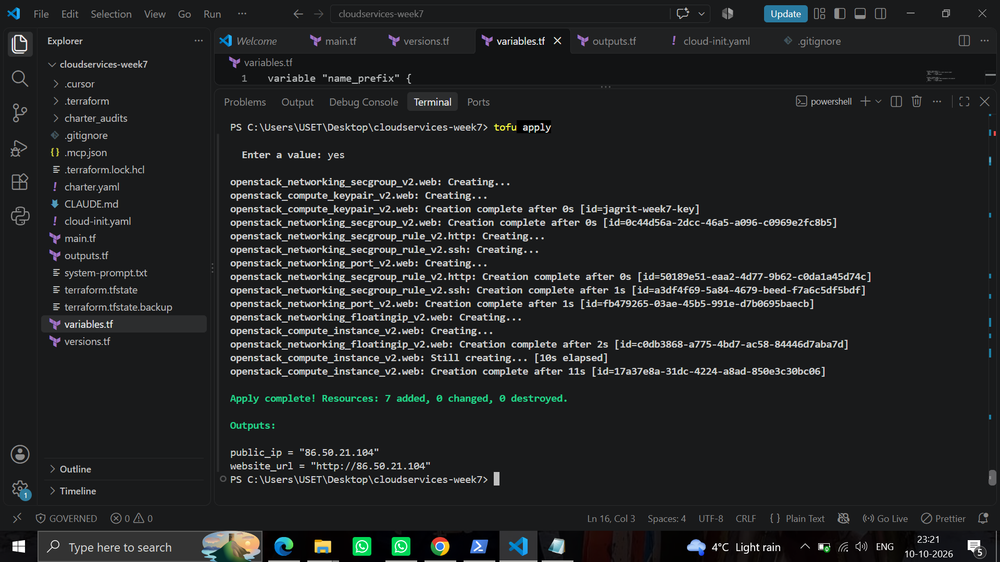

Student: Jagrit Handa | Platform: CSC cPouta (OpenStack) | Project: project_2020445
Live rebuilt website (at time of testing): http://86.50.21.104
GitHub repository: View GitHub Repository
Online documentation: View Complete Week 7 Documentation
Part A — Questions and answers
1. What is Infrastructure as Code, and which problems does it solve?
Infrastructure as Code (IaC) is the practice of describing servers, networks, firewall rules and other infrastructure in version-controlled configuration files instead of creating them by clicking in a dashboard. In Week 1, creating a VM manually required remembering the selected image, machine size, network and firewall rules. In Week 7, these choices were written in OpenTofu files. The same configuration could recreate the seven resources after they were destroyed. This improves repeatability, makes changes reviewable and reduces mistakes caused by forgotten manual steps.
2. Declarative versus imperative automation and idempotency
Imperative automation specifies actions in order, for example, run commands to create a firewall and then a server. Declarative automation specifies the desired final state, for example, one VM with HTTP access and a public IP. OpenTofu is declarative: it calculates the actions needed to match the configuration. Idempotency means that repeating an operation against an already-correct environment does not keep adding resources or changing them. I observed this when tofu plan reported “No changes. Your infrastructure matches the configuration.” after applying my configuration.
3. Why OpenTofu was created; comparison with Terraform
Terraform was developed by HashiCorp. After HashiCorp changed the license of newer Terraform versions from MPL 2.0 to the Business Source License in 2023, the community forked the last open-source version and created OpenTofu. OpenTofu remains MPL 2.0 open source and is hosted under the Linux Foundation. Both use HCL and compatible provider configurations; the commands are very similar, such as tofu plan versus terraform plan. For my coursework the practical difference is small. For a company, licensing, governance, long-term support and internal policies can influence the choice.
4. What is the state file and why must it stay out of Git?
The terraform.tfstate file records which real cloud objects correspond to the resources declared in the configuration, including their IDs and attributes. OpenTofu needs it to plan updates and deletions reliably. State can contain sensitive data, so I excluded *.tfstate and backups from Git using .gitignore. In a team, state is normally kept in a protected remote backend with controlled access and, where supported, locking so that concurrent changes do not corrupt it. State is not the same as the source configuration.
5. What is configuration drift and how is it detected?
Configuration drift happens when someone changes a managed cloud resource outside the IaC configuration. I renamed my VM directly in the cPouta Horizon interface. The next tofu plan refreshed the real resource and showed that its name differed from the name in main.tf, proposing an in-place correction. After tofu apply, another plan showed no changes. OpenTofu does not automatically detect every change inside the guest operating system, such as manually editing a webpage on the VM, because such files are not necessarily represented as managed resource attributes.
6. Provisioning versus configuration management; cloud-init and Ansible
Provisioning creates cloud resources such as the VM, network port, security group, keypair and floating IP. OpenTofu handled provisioning in my project. Configuration management sets up what runs inside the VM, such as installing a web server and writing an HTML page. My cloud-init.yaml was passed as user_data to automate that work on the VM’s first boot. Ansible is another configuration tool that can connect to running hosts, typically over SSH, and apply repeatable configuration tasks. cloud-init is especially convenient for initial bootstrapping.
7. Compare OpenTofu with another IaC tool
OpenTofu and OpenStack Heat both support declarative infrastructure definitions. OpenTofu uses HCL and providers, so the same workflow can manage many cloud services beyond OpenStack. Heat uses templates and integrates closely with OpenStack. For a project limited to OpenStack, Heat may be a natural choice; for a project that might also manage resources in other cloud platforms, I would consider OpenTofu because of its provider ecosystem and transferable workflow.
8. Why do in-place changes versus replacements matter?
An in-place update modifies a resource while keeping its identity, which can reduce interruption. Replacement destroys the existing resource and creates a new one; this can cause downtime, changed addresses or lost local data. In my experiment, editing cloud-init user_data caused the VM to be replaced (1 to add, 1 to destroy), while correcting the manually changed instance name was performed in place (0 to add, 1 to change, 0 to destroy). I would review replacements especially carefully for databases, disks, production servers and other resources with important state.
Part B — Rebuild the Week 1 VM as code
1. Goal and environment
I used OpenTofu in the VS Code PowerShell terminal on Windows to create a web server on CSC cPouta. The cloud platform uses OpenStack. The web server was configured automatically at boot using cloud-init rather than installing it manually through SSH. The setup used an existing CSC project network named project_2020445.
2. Files and their purposes
main.tf — declares the seven OpenStack resources and their relationships.
versions.tf — selects the OpenStack provider and its requirements.
variables.tf — declares configurable names, image/flavor, network, SSH key path, permitted SSH CIDR and webpage text; check the submitted file for its validation rule.
outputs.tf — displays public_ip and website_url after deployment.
cloud-init.yaml — boot-time configuration template for the web server and webpage content.
.terraform.lock.hcl — records selected provider versions for consistent initialization.
.gitignore — prevents state, credentials, private keys and local/generated files from being committed.
3. What each resource in main.tf does
data.openstack_networking_network_v2.project reads the existing project network; it does not create a new network.
openstack_compute_keypair_v2.web registers my SSH public key with cPouta; my private key stays local.
openstack_networking_secgroup_v2.web creates the firewall/security group.
openstack_networking_secgroup_rule_v2.ssh permits TCP port 22 only from the configured SSH CIDR.
openstack_networking_secgroup_rule_v2.http permits TCP port 80 from 0.0.0.0/0 for the public webpage.
openstack_networking_port_v2.web creates a network port and associates the security group with it.
openstack_compute_instance_v2.web creates the Linux VM, connects it to the port, uses the registered keypair and passes the rendered cloud-init template as user_data.
openstack_networking_floatingip_v2.web allocates a public IP from the public pool and associates it with the port.
Dependencies are expressed using references, for example the SSH rule refers to the security group ID, the VM refers to the network port, and the floating IP refers to the same port. OpenTofu builds the dependency order automatically.
4. Initial deployment and verification
Prediction: the first plan would propose creating the declared resources. After apply, a public IP and a working web page should be available.
Result: tofu plan proposed 7 to add. tofu apply completed with “Resources: 7 added, 0 changed, 0 destroyed.” The initial public IP was 86.50.21.16 and the webpage displayed my name and the Cloud Services Week 7 heading. The browser confirmed the page was served over HTTP.
Explanation: OpenTofu provisioned the infrastructure and cloud-init configured the web server automatically at first boot.

Figure 603. Initial plan: seven resources proposed.

Figure 604. Initial apply: seven resources created.

Figure 605. Original webpage served from the first public IP.
5. Experiment 1 — Change
Prediction before changing cloud-init: because the user_data value is part of the VM definition, I expected OpenTofu to notice the changed template; I was not initially certain whether the VM could be updated in place or would need replacement.
Result: after changing the page heading in cloud-init.yaml, tofu plan showed that openstack_compute_instance_v2.web must be replaced and reported 1 to add, 0 to change, 1 to destroy. tofu apply replaced the VM. The updated webpage appeared at the original floating IP, 86.50.21.16.
Explanation: cloud-init is designed to run during first boot, so a changed user_data value caused replacement of the VM rather than editing its existing web files. The floating IP was a separately managed resource attached to the network port and was retained during this VM replacement.
Second change type observed: the instance-name correction in Experiment 2 was an in-place update, not a replacement. However, that change originated in the web console rather than as a second code edit. To satisfy the guide literally, a separate code-based in-place change should still be demonstrated if it has not been done.

Figure 607. Plan indicating the VM must be replaced after cloud-init changed.

Figure 609. Apply output showing replacement of one VM.

Figure 610. Updated webpage after replacement.
6. Experiment 2 — Configuration drift
Prediction: manually changing the VM name in Horizon should make the actual infrastructure differ from the desired name in the OpenTofu code. I expected tofu plan to propose restoring the declared name, without recreating the whole VM.
Result: I changed the VM name to jagrit-week7-manual-change in the web console. tofu plan showed the change from the manual name back to jagrit-week7-vm and reported 0 to add, 1 to change, 0 to destroy. tofu apply updated the name in place. A subsequent tofu plan reported no changes.
Explanation: OpenTofu refreshed the VM attributes from OpenStack, compared the live name with the declared name and reconciled the difference. It tracks the managed cloud resource properties, not arbitrary content changed inside the guest OS.

Figure 611. Drift detected: manually changed name versus desired name.

Figure 612. Apply corrected the drift; subsequent plan showed no changes.
7. Experiment 3 — Destroy and rebuild
Prediction: tofu destroy would remove the managed resources in dependency-safe order, and tofu apply would create them again from the same configuration. I expected the page to work again, although the new public IP might differ.
Result: tofu destroy finished with “Destroy complete! Resources: 7 destroyed.” The output showed dependent rules, the VM and floating IP being removed before remaining supporting objects such as the security group. Afterward, tofu apply finished with “Resources: 7 added, 0 changed, 0 destroyed.” The rebuilt public IP was 86.50.21.104. The browser displayed the updated webpage, and a final tofu plan reported no changes.
Explanation: OpenTofu used the resource dependency graph to destroy and recreate the managed infrastructure. The different floating IP is expected because the original allocation was released during destroy. This proved the setup was reproducible without manually rebuilding it in Horizon.

Figure 613. Destroy completed: seven resources removed.

Figure 614. Rebuild completed: seven resources created.
8. Problems encountered and solutions
OpenStack authentication initially returned HTTP 401. I reset the CSC password in MyCSC and updated the credentials used by my local OpenStack environment. I did not store credentials in the repository.
The first VM replacement was not an in-place update. Reading the tofu plan showed that the changed user_data required replacement; I confirmed the result after apply.
Manual changes in Horizon caused configuration drift. I used tofu plan to identify the difference and tofu apply to restore the declared configuration.
After destroying and rebuilding the resources, the public IP changed. I used the new output value to open the correct website URL.
9. Reflection — Week 1 versus Week 7
In Week 1, manually creating a VM helped me understand where images, firewall rules and network settings are configured. However, repeating that process required remembering each setting and clicking through the dashboard again. In Week 7, writing the initial configuration required more preparation, but afterward I could create or destroy the complete environment with a small set of commands. The biggest benefit was repeatability: I destroyed seven resources and recreated all seven without setting them up manually. I also learned to review plans carefully because some changes, such as cloud-init updates, can replace a VM. Security was clearer in code because HTTP access and the restricted SSH CIDR were explicitly defined. For a one-off learning experiment, manual setup is simple; for repeatable deployments or teamwork, IaC is more reliable and easier to review.
10. Security, repository and submission checklist
Confirm the SSH CIDR is restricted to the intended address, not 0.0.0.0/0.
Never publish the OpenStack RC file, password, private SSH key, terraform.tfstate, state backups or sensitive *.tfvars.
Commit source .tf files, cloud-init.yaml, .gitignore and .terraform.lock.hcl after reviewing for secrets.
Insert the actual GitHub repository URL at the start of this report.
Publish this documentation as an online webpage running in a cloud service, then submit that webpage URL in Moodle.
Run tofu destroy when the assignment no longer needs the infrastructure to avoid consuming project resources.
Sources and learning materials
Ville Majava, “Week 7 – Infrastructure as Code with Terraform & OpenTofu” (course material provided for this assignment). OpenTofu documentation: https://opentofu.org/docs/ . OpenStack provider documentation: https://registry.terraform.io/providers/terraform-provider-openstack/openstack/latest/docs . cloud-init documentation: https://cloudinit.readthedocs.io/ .
Documentation note: All stated results are based on the supplied terminal and browser screenshots. Exact current GitHub link, deployment link, source-file validation rule and a second code-originated change should be verified before final submission.